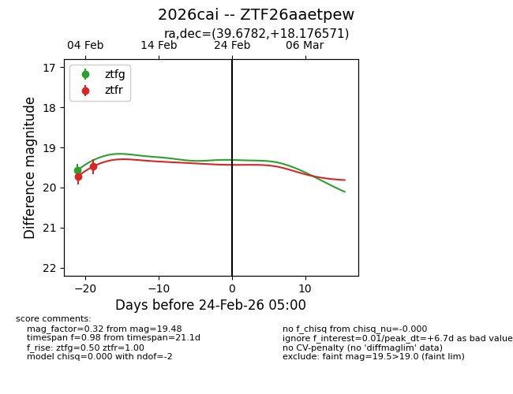
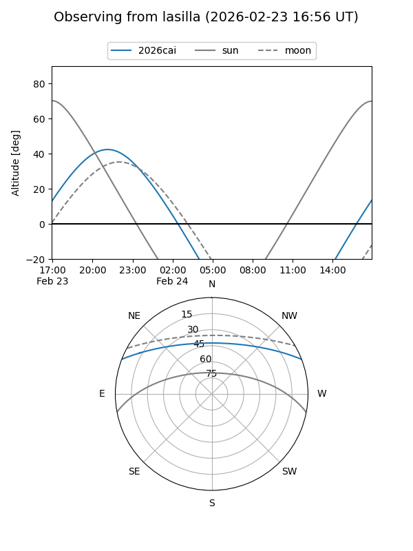
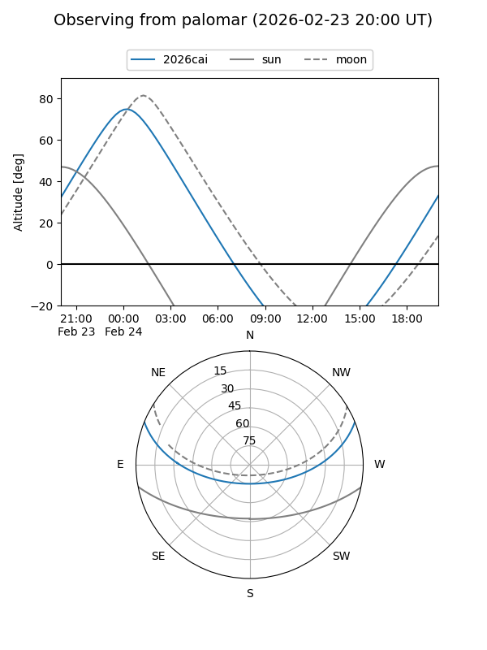

2026cai
Target 2026cai at 2026-02-24 09:08
Aliases and brokers:
FINK: link
Lasair: link
ALeRCE: link
TNS: link
YSE: link
alt names
ZTF26aaetpew (ztf,fink_ztf)
2026cai (tns,yse)
Coordinates:
equatorial (ra, dec) = 39.6782,+18.17657
equatorial (HMS+DMS) = 02:38:42.77,+18:10:35.66
galactic (l, b) = (155.7666,-37.76203)
Flags:
Photometry:
last ztfg=19.57, ztfr=19.48
1 ztfg, 2 ztfr detections
Lightcurve

Visibility


Additional plots